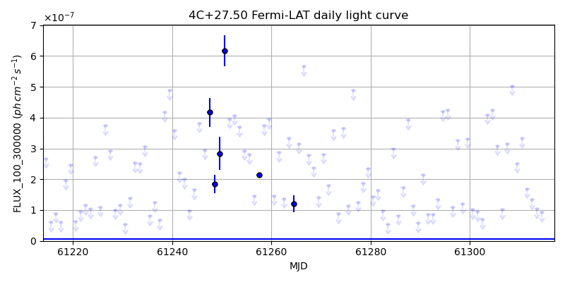
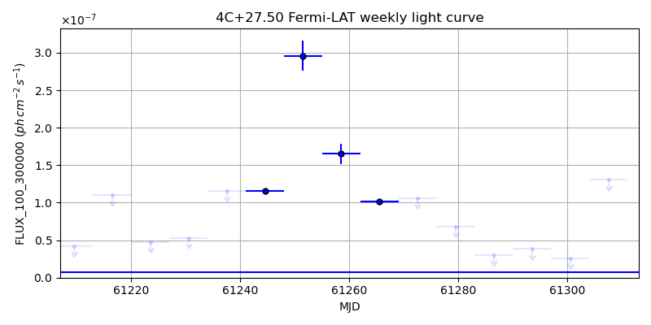
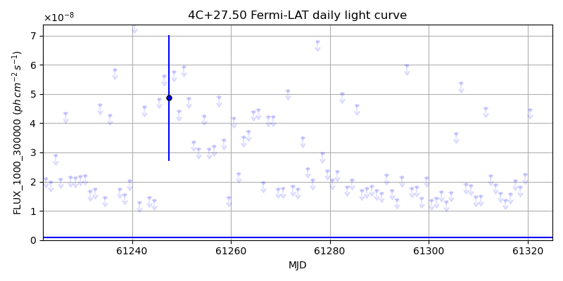
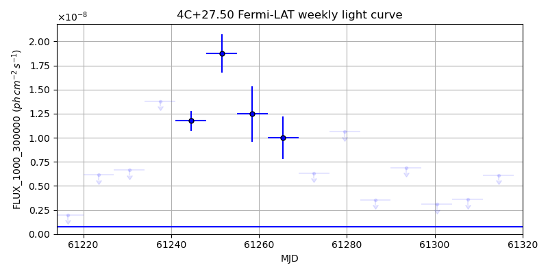

LAT Lightcurve site: https://fermi.gsfc.nasa.gov/ssc/data/access/lat/msl_lc/source/4C_p27d50
NED: Query
Time of last update of this page: UT: 2026-10-02 15:31 (MJD: 61315.647)
| Property | Value |
|---|---|
| R.A. | 23:21:59.76 |
| Dec. | 27:32:45.6 |
| z | 1.255 |
| 3FGL SpectrumType | PowerLaw |
| 3FGL PL Index | 2.28 |
| 3FGL Flux_100_300000 | 1.52e-08 1 / (s cm2) |
| 3FGL Flux_1000_300000 | 7.91e-10 1 / (s cm2) |
| 3FGL Flux >200 GeV | 8.84e-13 1 / (s cm2) |
| 3FGL Extrap. Crab >200 GeV | 0.00 |
| 3FGL Flux After EBL Absorption >200GeV | 4.15e-15 1 / (s cm2) |
| 3FGL EBL Crab Fraction >200GeV | 0.00 |

| MJD | dMJD | Flux | dFlux | Frac3FGL | FracCrab>200GeV | EBLFracCrab>200GeV |
|---|---|---|---|---|---|---|
| 61310.50 | 0.50 | 3.33e-07 | 0.00e+00 | 0.00 | 0.00 | 0.00 |
| 61311.50 | 0.50 | 1.69e-07 | 0.00e+00 | 0.00 | 0.00 | 0.00 |
| 61312.50 | 0.50 | 1.35e-07 | 0.00e+00 | 0.00 | 0.00 | 0.00 |
| 61313.50 | 0.50 | 1.04e-07 | 0.00e+00 | 0.00 | 0.00 | 0.00 |
| 61314.50 | 0.50 | 9.32e-08 | 0.00e+00 | 0.00 | 0.00 | 0.00 |

| MJD | dMJD | Flux | dFlux | Frac3FGL | FracCrab>200GeV | EBLFracCrab>200GeV |
|---|---|---|---|---|---|---|
| 61279.50 | 3.50 | 6.84e-08 | 0.00e+00 | 0.00 | 0.00 | 0.00 |
| 61286.50 | 3.50 | 3.04e-08 | 0.00e+00 | 0.00 | 0.00 | 0.00 |
| 61293.50 | 3.50 | 3.85e-08 | 0.00e+00 | 0.00 | 0.00 | 0.00 |
| 61300.50 | 3.50 | 2.62e-08 | 0.00e+00 | 0.00 | 0.00 | 0.00 |
| 61307.50 | 3.50 | 1.31e-07 | 0.00e+00 | 0.00 | 0.00 | 0.00 |

| MJD | dMJD | Flux | dFlux | Frac3FGL | FracCrab>200GeV | EBLFracCrab>200GeV |
|---|---|---|---|---|---|---|
| 61310.50 | 0.50 | 1.51e-08 | 0.00e+00 | 0.00 | 0.00 | 0.00 |
| 61311.50 | 0.50 | 4.52e-08 | 0.00e+00 | 0.00 | 0.00 | 0.00 |
| 61312.50 | 0.50 | 2.20e-08 | 0.00e+00 | 0.00 | 0.00 | 0.00 |
| 61313.50 | 0.50 | 1.90e-08 | 0.00e+00 | 0.00 | 0.00 | 0.00 |
| 61314.50 | 0.50 | 1.61e-08 | 0.00e+00 | 0.00 | 0.00 | 0.00 |

| MJD | dMJD | Flux | dFlux | Frac3FGL | FracCrab>200GeV | EBLFracCrab>200GeV |
|---|---|---|---|---|---|---|
| 61279.50 | 3.50 | 1.06e-08 | 0.00e+00 | 0.00 | 0.00 | 0.00 |
| 61286.50 | 3.50 | 3.55e-09 | 0.00e+00 | 0.00 | 0.00 | 0.00 |
| 61293.50 | 3.50 | 6.89e-09 | 0.00e+00 | 0.00 | 0.00 | 0.00 |
| 61300.50 | 3.50 | 3.10e-09 | 0.00e+00 | 0.00 | 0.00 | 0.00 |
| 61307.50 | 3.50 | 3.59e-09 | 0.00e+00 | 0.00 | 0.00 | 0.00 |
--------------------------------------------------------- Using user-supplied coords: 23:21:59.76 27:32:45.6 2000 --------------------------------------------------------- FLWO UT night of: 2026-10-03 Local Sid. @ Midnight: 00:24 Sunset (-15.0) (local, UT): 19:14 02:14 Sunrise (-15.0) (local, UT): 05:12 12:12 Moonrise (local, UT): 22:48 05:48 Moonset (local, UT): Moon phase: 0.53 --------------------------------------------------------- AzTime LSID UT Obj_el Obj_az Mn_el Mn_az Sep. --------------------------------------------------------- 19:14 19:37 02:14 41.3 79.3 -28.5 20.1 88.7 19:44 20:07 02:44 47.6 82.3 -26.2 26.7 89.1 20:14 20:37 03:14 54.0 85.4 -23.2 32.8 89.4 20:44 21:07 03:44 60.4 88.9 -19.6 38.5 89.7 21:14 21:37 04:14 66.8 93.0 -15.7 43.6 90.0 21:44 22:07 04:44 73.1 98.8 -11.3 48.4 90.3 22:14 22:37 05:14 79.3 109.0 -6.5 52.7 90.6 22:44 23:07 05:44 84.8 138.8 -0.8 56.7 90.9 23:14 23:37 06:14 84.9 219.4 3.8 60.4 91.2 23:44 00:07 06:44 79.5 250.5 9.1 63.9 91.4 00:14 00:38 07:14 73.3 261.0 14.6 67.1 91.7 00:44 01:08 07:44 67.0 266.8 20.3 70.2 91.9 01:14 01:38 08:14 60.6 271.0 26.1 73.1 92.1 01:44 02:08 08:44 54.2 274.5 32.1 76.0 92.3 02:14 02:38 09:14 47.8 277.6 38.1 78.8 92.5 02:44 03:08 09:44 41.5 280.6 44.2 81.7 92.7 03:14 03:38 10:14 35.2 283.5 50.3 84.8 92.9 03:44 04:08 10:44 29.1 286.4 56.5 88.1 93.1 04:14 04:38 11:14 23.0 289.4 62.7 91.9 93.3 04:44 05:08 11:44 17.0 292.5 68.9 96.9 93.4 05:12 05:37 12:12 11.5 295.6 74.7 103.8 93.6 --------------------------------------------------------- Dark hours >55 deg.: 2.49 srcstart (UT): 2026-10-03 03:18 srcend (UT): 2026-10-03 05:48